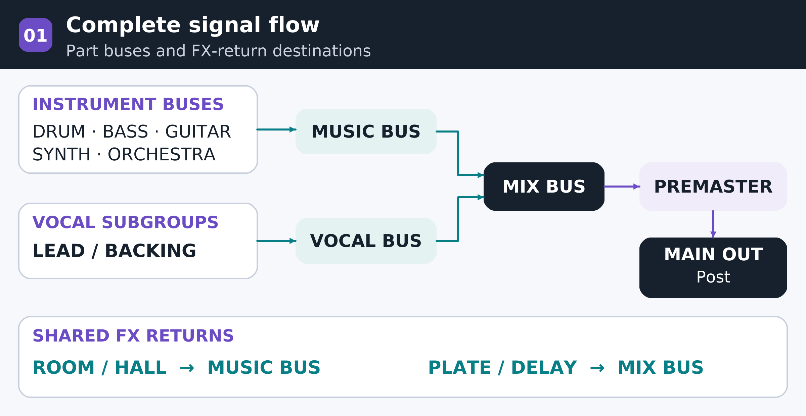
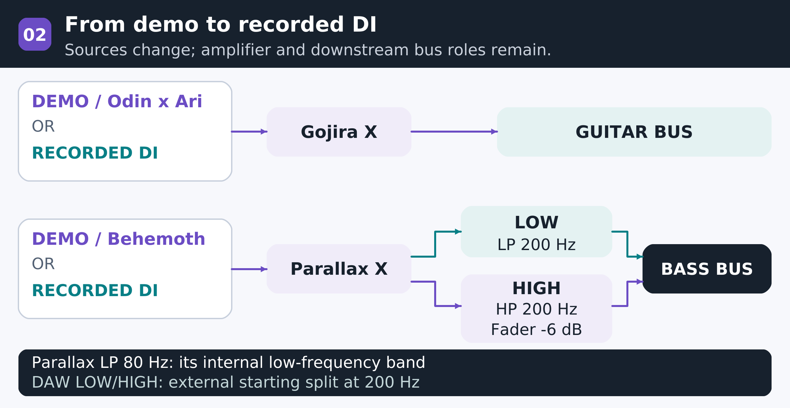
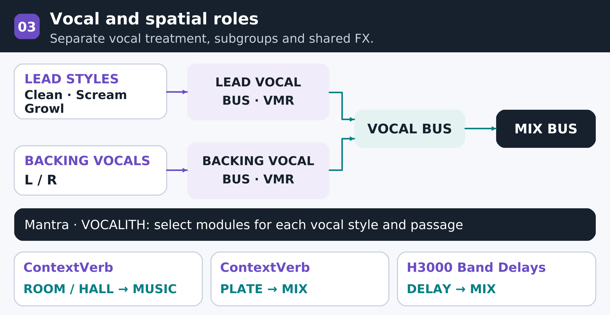
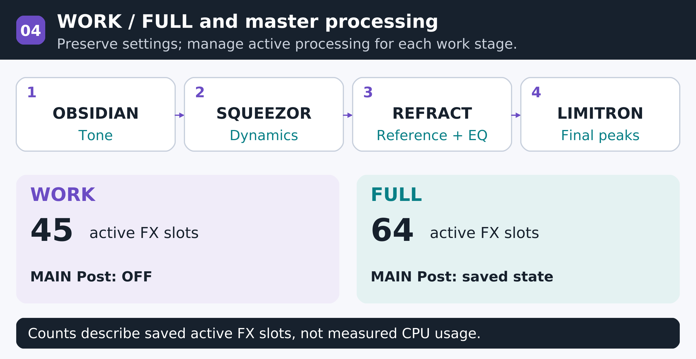

DEADWIRE / PRODUCTION RESEARCH
A Develop Device-centered
DAW template and operating standard
RESEARCH JOURNAL / 2026.10.29 / v1.3
Purpose of the production template
A common production environment supports DEADWIRE's Drop A guitars and bass, varied vocal styles, piano and orchestra. Defined instrument and plug-in roles reduce repeated setup and keep attention on arrangement, performance and tonal decisions.
SOURCE
Guitar/bass DI recording / Demos: Odin x Ari · Behemoth
PROCESS
OBSIDIAN · SQUEEZOR · VOCALITH · VMR
DELIVERY
WORK / FULL · Level matching · Output verification
Reference project: Varg av Valkyria
7-string Drop A guitar · 5-string Drop A bass · Studio One / Studio Pro
01 / PURPOSE
Purpose of the production template
A common environment for repeatable production of DEADWIRE arrangements
DEADWIRE's instrumentation combines 7-string Drop A guitar and 5-string Drop A bass with piano, orchestra, synthesizers, clean vocals, screams and growls. A common working environment provides a consistent starting point for each song and a coherent basis for assessing the album's sound.
The template reduces repeated instrument loading and bus/FX routing at the start of each song. Defining signal paths and processing roles in advance leaves more production time for musical decisions: the relationship between riffs and vocals, low-end weight and orchestral development.
Guitar and bass follow a workflow from demo to recorded performance. Odin x Ari and Behemoth serve composition and arrangement demos. Actual recording uses guitar and bass DI audio through the same amplifiers and downstream bus structure.
Established tools, consistent production criteria
The move from the previous iZotope Ozone workflow to a Develop Device-centered configuration puts purchased tools to use from individual parts through final output. Documenting each product's selection and placement establishes criteria that can be reused in subsequent songs.
| Production goal | Template standard |
|---|---|
| Less repeated setup | Prepare instruments, part buses and shared FX so each song starts from a common structure. |
| Independent part control | Separate bass LOW/HIGH, lead/backing vocals, clean/scream/growl vocals and drum microphone groups. |
| Consistency across songs | Retain channel names, output paths and comparison criteria; adapt settings to each song's sources. |
| Stage-specific operation | Maintain WORK and FULL versions, enabling only required processing while preserving settings and source material. |
Production goals reflect DEADWIRE's instrumentation, existing tools and workflow requirements. Reference template [2].
02 / TRANSITION
From Ozone to Develop Device
A common production standard spanning sources, buses, spatial effects and mastering
The previous production environment used the iZotope Ozone series. This template centers on Develop Device to make fuller use of existing products and presets, and to establish a common working standard from individual instruments through buses, spatial effects and final output.
DEADWIRE's low-register guitars and bass, varied vocal styles, piano and orchestra require different processing. Defining each stage's task and destination bus allows attention to remain on the source and arrangement within a reusable structure.
Four priorities for the transition
| Selection criterion | Rationale for the Develop Device-centered configuration |
|---|---|
| Use existing assets | Organize purchased plug-ins, presets and IRs as starting points for each part. Reduce time spent rebuilding chains and focus on adjustments for the song. |
| Consistent processing criteria | Place OBSIDIAN and SQUEEZOR on tracks, buses and the master. Use familiar tools while assigning a distinct EQ or compression task to each location. |
| Connect part-specific roles | Connect the workflow through VOCALITH for vocals, ContextVerb for shared spaces, and REFRACT/LIMITRON for master analysis, tone and output. |
| Reuse and transition to recording | Odin/Behemoth demos and recorded DI use a common amp/bus structure. Retain downstream roles while adapting settings to the input conditions and song. |
Defined roles at the master stage
The master Post chain assigns overall tonal correction to OBSIDIAN, dynamics to SQUEEZOR, reference analysis and EQ to REFRACT, and final peak/output control to LIMITRON. Each stage applies only the processing needed to support the balance established by individual tracks and buses.
Context: previous Ozone use and the use of existing Develop Device assets. Product roles and placement [1,2].
03 / INSTRUMENT SELECTION
Why these six virtual instruments
Selection criteria: performance editing, arrangement role and reusable existing presets
Odin x Ari and Behemoth provide MIDI editing for guitar and bass demos. Actual recording uses DI audio. Drums, piano, synthesizers and strings are assigned according to each instrument's role.
| Instrument | Selection rationale | Assigned part |
|---|---|---|
| Odin x Ari | Selected for MIDI editing of guitar riffs and articulations in demos. Gojira X provides tone evaluation; actual recording uses guitar DI. | Demo guitar Rhythm / quad / lead |
| Behemoth Bass | Selected for MIDI editing of Drop A bass pitch, timing and dynamics, with Parallax X for demo tone. Actual recording uses bass DI. | Demo bass BASS MIDI |
| Divine Destruction Drums | Provides per-part Close, OH, Room and Balcony adjustment internally, with eight grouped stems for DAW processing. | Full drum kit 8 stereo stems |
| Serum 2 | Uses existing Develop Device presets while allowing pad/synth attack, release and harmonics to be adapted to the arrangement. | PAD 1/2 String sound candidate |
| Omnisphere 3 | Expands the palette for bass synth and atmospheric layers. Currently assigned to BASS SYNTH; also retained as a candidate for string sounds. | BASS SYNTH String sound candidate |
| Arturia Piano V3 | Maintains the melodic and harmonic center as the arrangement develops from piano into orchestra and metal instrumentation. | Piano ORCHESTRA BUS |
A shared downstream chain for demos and DI
Demos use Odin/Behemoth; recorded performances use DI. Guitar runs through Gojira X and GUITAR BUS; bass uses Parallax X, LOW/HIGH and BASS BUS. Input level and tone are readjusted when the source changes.
The six loaded instrument products and Arturia Piano V3's ORCHESTRA BUS routing were verified in reference file [2].
04 / TONE & DYNAMICS
Tone and dynamics: selection rationale
Distinct processing roles from source character to final output
A product's role depends on its position. Amplifiers establish source character, EQ manages frequency relationships, compressors shape dynamics and cohesion, and the final master stages manage overall tone and output.
| Effect | Selection rationale | Main placement |
|---|---|---|
| Gojira X | Manages amp and cabinet tone for recorded guitar DI and Odin demos in one environment. Purchased Gojira presets and IRs are also used. | Guitar DI / demo Source channels |
| Parallax X | Separates low-band compression from mid/high distortion, allowing Drop A bass weight and riff articulation to be shaped together. | Bass source Before LOW/HIGH split |
| OBSIDIAN | Provides a common EQ environment for instrument correction, bass band separation, and frequency balance/resonance control on buses and FX returns. | Tracks / part buses FX returns / master |
| SQUEEZOR | Uses a consistent control approach for distinct compression tasks: track dynamics, bus cohesion and parallel drum density. | Drums / bass Buses / master |
| REFRACT | Combines reference analysis and EQ in a dedicated stage for evaluating the overall tonal direction. | MAIN OUT Post |
| LIMITRON | Separates final peak and output control from the preceding tonal and dynamics processing. | MAIN OUT Post Final output stage |
Using one tool in several roles
OBSIDIAN and SQUEEZOR appear across channels to standardize recurring EQ and compression work. Frequency targets and response times are set separately for kick, bass, guitar buses and the master.
Product placement and actual chains [2]. Parallax band processing [4]; EQ and dynamics operating principles [1].
05 / VOCAL & SPACE
Vocal and spatial tools: rationale
Independent control of intelligibility, vocal expression and spatial depth
Vocal processing must address the tone of each delivery style while supporting expression through harmony and doubling. The following tools divide these tasks among individual vocals, vocal groups and shared spatial effects.
| Effect | Selection rationale | Main placement |
|---|---|---|
| Mantra | Corrects clean-vocal pitch and tone and extends expression through harmony, formants, doubling and spatial effects. Modules are selected for the delivery style. | Individual vocals Choir / special layers |
| VOCALITH 2 | Combines EQ, dynamics, sibilance/resonance control, saturation and output management to fit each vocal style into the mix. | Individual vocals Final cleanup / color |
| VMR | Adjusts the shared tone and dynamics of multiple vocal tracks on the lead and backing sub-buses. | LEAD VOCAL BUS BACKING VOCAL BUS |
| ContextVerb Pro 2 | Manages shared spaces within one plug-in family while preserving distinct ROOM, PLATE and HALL roles. | Shared reverb FX returns |
| H3000 Band Delays Mk II | Controls repeat patterns and tone on independent delay returns. The 1/4 and 1/8 paths shape vocal and lead phrases. | Shared delay FX returns |
Assigning functions to processing stages
Mantra and VOCALITH handle style-specific correction and expression; VMR provides cohesion for lead/backing groups. ContextVerb and Eventide FX returns manage shared ambience and repeats, with separate send amounts and return tone for each part.
Vocal/FX chains [2]; VOCALITH and spatial principles [1]; Mantra processing, harmony and Post FX [3].
06 / ROUTING
A defined signal-flow structure
Explicit summing points for direct signals, part buses and spatial returns
Guitar/bass demos or recorded DI feed their amps and part buses. Instrument groups feed MUSIC BUS, vocals feed VOCAL BUS, and both meet at MIX BUS. This separates backing/vocal adjustment while retaining a single final balance point.
The upper groups represent the part buses for each instrument family.
| Category | Role | Reference configuration |
|---|---|---|
| Part buses | Level, tone and dynamics within one instrument family | DRUM / BASS / GUITAR / SYNTH / ORCHESTRA |
| FX returns | Parallel reverb/delay processing fed by sends | ROOM / PLATE / HALL / DELAY |
| Mix FX slots | Dedicated format affecting multiple input channels | Empty in the current template |
| MIX / PREMASTER | Overall balance and final output routing | MIX → PREMASTER → MAIN OUT |

Actual reference-template routing [2]; host definitions of buses, sends and Mix Engine FX [6].
07 / DRUMS
Internal drum balance and external stems
Selection criteria: per-part microphone balance and independent shared ambience
Divine Destruction permits per-part Close, OH, Room and Balcony balance while grouping common microphone families in the DAW. Fine internal balancing is combined with processing across eight external stems. MIDI mapping is standardized on Toontrack.
| DAW output | Channel | Included signal |
|---|---|---|
| Out 1-2 | KICK | Left/right kick Close and One Shot |
| Out 3-4 | SNARE | Snare Close and One Shot |
| Out 5-6 | HI HAT | Left/right hi-hat close signals |
| Out 7-8 | TOMS | Close signals from six toms |
| Out 9-10 | CYMBALS | Close cymbal signals excluding hi-hats |
| Out 11-12 | OVERHEADS | Overhead components from all parts |
| Out 13-14 | ROOM MICS | Room components from all parts |
| Out 15-16 | BALCONY | Balcony components from all parts |
Processing roles
Close channels provide attack and body; OH provides cymbals and width; Room/Balcony provide depth and ambience. For fast double-kick and blast passages, ambience levels are reduced as needed to avoid masking subsequent hits.
Toms use OBSIDIAN and SQUEEZOR. All drum outputs feed DRUM BUS. A separate SQUEEZOR parallel path is blended at a low level into MUSIC BUS to add density.
Outputs and plug-ins reflect saved reference-template settings [2]. Drum principles from [1] are applied to this structure.
08 / DROP A GUITARS
Guitar density: performance and cabinets
Selection criteria: rapid demo review and amp/cabinet processing for recorded DI
Odin x Ari was selected for MIDI demos of riffs and articulations. Gojira X provides amp, cabinet and IR tone for both demos and recorded guitar DI. The demo path is Odin → Gojira X → GUITAR BUS; the recording path is guitar DI → Gojira X → GUITAR BUS.
| Stage | Operating standard |
|---|---|
| Source and gate | Refine note attacks and articulations first. Use the gate to control noise between notes while preserving the onset of short muted notes. |
| Amp gain | Set gain within a range that preserves chord separation and pick attack. Reassess distortion per track as more layers are added. |
| Cabinet / IR | Prioritize placement in the full mix over isolated bass weight. Compare purchased Gojira presets and IRs at matched levels. |
| GUITAR BUS | Use SQUEEZOR for cohesion and OBSIDIAN to control palm-mute low mids and harsh presence as required. |
Quad rhythm operating standard
Record four independently performed DI takes. Pan the two main takes hard left and right, and the two supporting takes to L70/R70. Blend the supporting tracks without masking the central vocal and snare.
Source/bus chains and internal pan: [2]. Cabinet, doubling and EQ principles: [1].
09 / DROP A BASS
Separate bass weight and articulation
Selection criteria: demo/DI workflow and independent low-end/harmonic control / A0 = 27.5 Hz
Behemoth was selected for MIDI demos of Drop A bass lines. Parallax X separates low-band compression from mid/high-band distortion. Recorded bass follows bass DI → Parallax X → LOW/HIGH → BASS BUS. Demos use the same downstream structure.
Main output → LOW
Post-fader Send → HIGH
| Control point | Reference setting | Purpose |
|---|---|---|
| Inside Parallax | Low LP 80 Hz | Internal low-band processing range |
| DAW LOW | OBSIDIAN LP 200 Hz SQUEEZOR 6:1 / 10 ms / 100 ms | Low-end weight and sustained-note consistency |
| DAW HIGH | OBSIDIAN HP 200 Hz Channel fader -6 dB | Blend of attack, harmonics and midrange articulation |
| BASS BUS | OBSIDIAN → SQUEEZOR | Balance the summed bass against the kick |
200 Hz is the template's starting point. Matching cutoff frequencies alone does not guarantee a fully complementary crossover or phase alignment. Check summed level, mono low end and plugin latency across both paths.

Saved frequencies, compression and routing: [2]. Parallax's internal parallel processing and cabinet scope: [4].
10 / VOCALS
Assign vocal roles by delivery and function
Selection criteria: delivery-specific correction, expression and group tonal consistency
Mantra was selected for pitch, tone and expressive options such as harmonies. VOCALITH adapts resonance, sibilance and dynamics to the mix. VMR operates on the vocal subgroups. Lead and backing vocals are processed separately, then combined at VOCAL BUS.
| Tool | Main role | Application criteria |
|---|---|---|
| Mantra | Pitch, Sculpt, dynamics, character Harmony, doubling, special ambience | Clean-vocal pitch and tone; choir layers. For screams and growls, retain the original delivery and enable only the required modules. |
| VOCALITH 2 | Residual resonance, sibilance, EQ, saturation Output and built-in vocal FX | Address issues remaining after Mantra or add part-specific color. Continuous use of every feature is unnecessary. |
| VMR | Tonal consistency on lead and backing subgroups | Unify multiple voices within a group. Correct individual words on their source tracks. |
Dedicated growl starting point
LEAD GROWL has dedicated Mantra and VOCALITH instances. Start with tuning, harmony, gate and built-in ambience off; adjust HP 80 Hz and Mantra's 300 Hz / -1.5 dB setting to the recording. Keep both inserts inactive while the channel is empty.
Using gates and EQs in series
Serial use is valid when roles are distinct: the first EQ removes unwanted input lows, the next addresses resonance after compression or distortion, and bus EQ shapes the sum. Two gates may over-trim the same syllable; check closing behavior, hold and release against the actual articulation.

Current channels and growl starting values: [2]. VOCALITH functions: [1]. Mantra modules and Sculpt analysis: [3].
11 / SPACE & LAYERS
Depth through ambience and layers
Selection criteria: shared ambience and phrase shaping on independent delay returns
ContextVerb Pro 2 manages ROOM, PLATE and HALL in one environment. Eventide H3000 Band Delays Mk II shapes repeat patterns and tone on independent returns. Shared ambience is assigned to FX returns; built-in vocal FX serve part-specific character and passage effects.
| Return | Processor | Current destination / role |
|---|---|---|
| ROOM | ContextVerb Pro 2 | MUSIC BUS / short instrumental ambience |
| PLATE | ContextVerb Pro 2 | MIX BUS / vocal and snare reverb |
| HALL | ContextVerb Pro 2 | MUSIC BUS / depth for pads, leads and orchestra |
| DELAY 1/4 | H3000 Band Delays Mk II → OBSIDIAN | MIX BUS / phrase-end repeats |
| DELAY 1/8 | H3000 Band Delays Mk II → OBSIDIAN | MIX BUS / short rhythmic repeats |
Timing reference at 100 BPM
Quarter note: 600 ms; eighth note: 300 ms; dotted eighth: 450 ms. A quarter note is calculated as 60,000 ÷ BPM. Check plugin Sync, note division and feedback independently of channel names. Raise sends at phrase endings and reduce them when the next lyric begins to preserve intelligibility.
Synth and string placement
PAD 1 and 2 use Serum 2, with purchased Develop Device presets chosen for each role. Select string sounds in Serum or Omnisphere by attack, release and range. Route STRINGS AUDIO, BRASS, WOODWINDS, ORCH PERC and ORCH FX to ORCHESTRA BUS.
FX, output routes and instrument slots: [2]. Shared ambience/layer principles: [1]. Timing values calculated at 100 BPM.
12 / MIX & MASTER
Manage level across the output path
Selection criteria: separate tonal balance, cohesion, reference analysis and output control
OBSIDIAN and SQUEEZOR provide common criteria for overall tone and dynamics. REFRACT handles reference analysis and EQ; LIMITRON handles final peaks and output. MIX BUS → PREMASTER → MAIN OUT separates these stages.
| MAIN OUT Post order | Functional allocation |
|---|---|
| 1 OBSIDIAN | Overall frequency balance and corrective shaping |
| 2 SQUEEZOR | Overall dynamics and cohesion |
| 3 REFRACT | Reference analysis and EQ processing |
| 4 LIMITRON | Final peak and output control |
Level assessment criteria
| Measurement | Measured quantity | Operating standard |
|---|---|---|
| Peak dBFS | Maximum instantaneous amplitude | Check clipping and headroom |
| Integrated LUFS | Average loudness over the measured interval | Compare track and reference loudness |
| True Peak | Estimated peak of the reconstructed signal | Assess output margin for export and encoding |
Assess final level with the meter units, playback interval, master chain and output gain documented together. Preserve peak headroom during mixing. Set final loudness against a loudness-matched reference while judging drum attack and vocal intelligibility.
Master chain and reference routing: [2]. Headroom, level matching and mastering criteria: [1].
13 / WORKFLOW
Separate WORK and FULL operation
Manage setting preservation, playback load and reuse separately.
| Item | WORK | FULL |
|---|---|---|
| Purpose | Editing, arranging and routine playback | Compare or restore full processing state |
| Existing tone settings | Preset values preserved | Preset values preserved |
| 4 MAIN Post slots | OFF | User-saved state retained |
| Empty MIDI guitar paths | 12 inserts on 8 channels OFF 3 GUITAR BUS inserts OFF | User-saved state retained |
| Active FX slots | 45 | 64 |
| Growl channel | Empty channel / inserts OFF | Empty channel / inserts OFF |
| Loaded configuration | 14 instruments retained | 14 instruments retained |
Active FX counts describe saved states, not measured CPU reductions or playback stability. Bypass, host deactivation, instrument unloading and audio transformation are distinct operations.
Host operating criteria
The current default template uses 44.1 kHz. Compare buffer settings in the actual project rather than fixing the maximum; 1024 samples can serve as a mixing reference. Inspect demanding devices and serial bus paths in the performance monitor. Transform settled parts to audio while preserving the originals.
Applying the structure to new and existing songs
New songs reuse the empty template's instruments, buses and FX. The default arrangement is 100 BPM, 4/4 and 64 bars. For existing songs, transfer the required channels and settings in a separate copy. Preserve the original tempo, MIDI and audio, then verify instrument outputs and Send destinations.

Mode counts and template format: [2]. Buffer, serial processing, performance monitoring and audio transformation: [5,6].
14 / ADOPTED STANDARD
Adopted production standards
Reuse roles and verification criteria rather than copying one song's parameter values.
| Adopted criterion | Standards retained for subsequent songs |
|---|---|
| Source and tone | Recording: guitar/bass DI · Demo: Odin x Ari / Behemoth Shared processing: guitar Gojira X / bass Parallax X · Drums: Divine Destruction |
| Role separation | Bass LOW/HIGH; Clean, Scream, Growl and Backing vocals; 8 drum stems |
| Develop Device use | Assign OBSIDIAN, SQUEEZOR, VOCALITH, ContextVerb, REFRACT and LIMITRON by role |
| Ambience | Specify shared-return destinations and automate Sends where required |
| Quality assessment | Level-matched A/B, mono summing, quiet-level vocal/bass audibility and output-peak checks |
| Reuse | Retain WORK/FULL and empty templates; adapt input, analysis and tone to each new source |
Document status: configuration and operating criteria established. Reference-file connections, preset preservation and empty-template structure were checked. Playback CPU on the actual PC, output loudness and final listening assessment require separate measurement.
References
[1] Develop Device, Modern Metal Mixing & Mastering, 18 Oct 2026.
User-provided PDF. Principles for part processing, levels, ambience and mastering structure.
[2] DEADWIRE Modern Metal Session, version 9.
FULL/WORK Song files, empty templates and independent QA records as of 29 Oct 2026.
[3] Neural DSP, Mantra User Manual.
Correction, Harmonies, Post FX and Sculpt analysis state.
Parallel low-band compression, mid/high-band distortion and cabinet routing.
[5] PreSonus, How to Improve Computer Performance for Digital Audio.
Buffer selection, serial bus dependencies, performance monitoring and audio transformation.
[6] Fender Studio Pro Reference Manual, Effects Signal Routing.
Buses, Sends, Mix Engine FX and activation-state distinctions.
References checked: 29 Oct 2026.